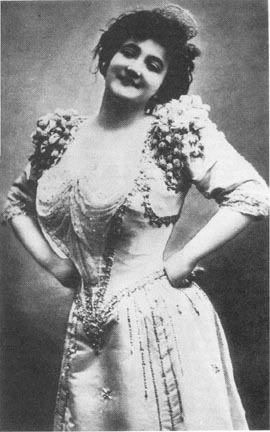
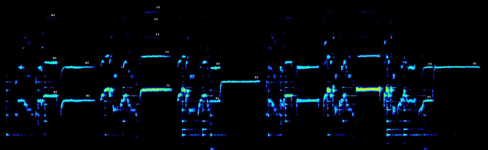
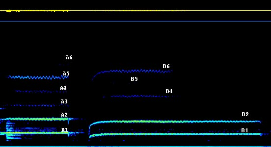
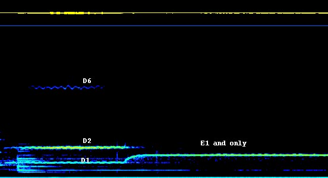
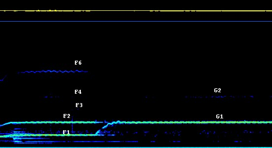

Born in 1882, the dramatic soprano Emma Calve was renowned for her interpretation of Carmen. In 1908 she recorded a French folk song "Ma Lisette" for Victor. Despite the limitations of early recording technology, enough of her extraordinary voice comes across to show some very interesting features in a spectrogram. (I am including the full size spectrogram to allow subtle details to be seen. Fire up the recording and try to get oriented in the spectrogram. Scroll across as the song progresses. A and B are the first two long notes.)

The range of the spectrogram (vertical axis) is from 100 to 5500cps. The piano tones are obvious from their attenuated tone as well as their mechanical quality compared to the vocal sounds. I have marked several sustained notes with letters and a partial number. By tweaking the program (reducing the FFT time scale) it is possible to get more resolution. The following close ups illustrate this.



Here is the corresponding part of the end of the song, leading up to that incredible last note (~1137cps). Notice that F2 is the second partial of F1 and she glides up to G1 to match F2. In this case there is a whisper of the second partial at G2, but the effect is still remarkable.